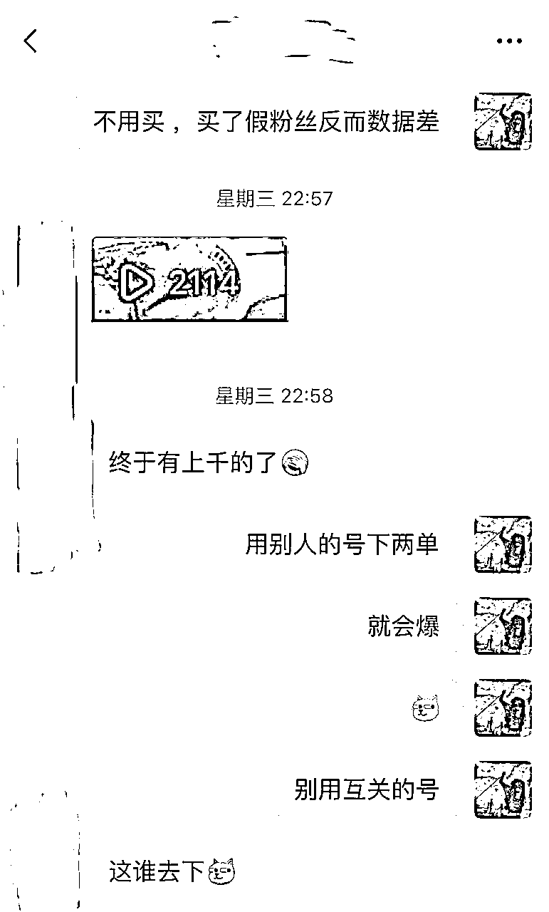
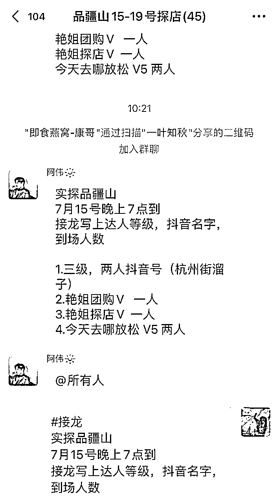

来源：https://ixnoucqi80.feishu.cn/docx/Z0GXd72oeoKpNmxacIKcqRx0nRf
#本地生活 #抖音团购 #副业#长尾效应
想不到什么猎奇的自我介绍了，什么变现多少万，播放量几千万都很虚，我被罗永浩转发过两次微博，哈哈哈！！！
————2023.7.15第一版写的比较粗，还在更新中————
继闲鱼无货源、快手电商、抖音电商后，我尝试了抖音团购，没错，我又拿到了结果，每天1-2h，副业做团购首月，月收入5k+，本文也会尽可能详细的拆解我是如何从0开始做的，同时也会讲解我对副业的理解，保姆级教程，看完直接可以上手！！！
关于“长尾效应”，我在快手有一条播放1000w+作品，一年过去了，现在还在出单，这也是我今天讲的关键词 “长尾效应”，在抖音同样适用，合格的副业一定是具有长尾效应，且边际成本不断降低的，否则你只是在用体力换钱！
抖音团购我做了多个账号，尝试了多种风格，有纯靠搬运的，也有原创实拍的，也教了一些伙伴实操，大家都相继拿到了结果，文末分享保姆级实操干货，记得看完！

文章分五个部分讲解：
一、什么是抖音团购
二、团购达人可以赚几份钱
三、如何成为团购达人
四、成为团购达人后，如何赚钱（实操干货）
五、硬核经验总结（实操干货）
这里我们了解三个角色
角色一，抖音官方：流量分发平台（你有好的内容会给你分发更多的流量）、ugc内容平台（大量的用户生产内容），超高日活与留存，而且，目前抖音正全力进军本地生活，各大头部生活服务平台也陆续进军抖音，上升空间巨大！你们发现没，以前抖音都是看别人的美好生活，很多都是遥不可及，现在！本地生活板块开始后 ，你更多的可以看到附近的好玩好吃的地方，团券后，可以直接去线下使用！似乎我们的生活方式也有所改变！
角色二，本地生活商家：线下商家，需要店铺流量，需要卖套餐，借助抖音平台进行宣传，如：盒马鲜生、京东服务、海底捞等都相继入驻抖音团购
但是本地生活商家自身并不具备输出优质内容的能力，并且自身流量不高，所以需要抖音的创作者们帮助他们进行宣传，所以，团购达人出场
角色三，团购达人：围绕商家特色输出内容，引导用户进行下单并前往店铺核销，目前越来越多的用户开始成为团购达人，整个抖音的本地生活生态在不断完善，团购达人是不可或缺的一环
聚焦角色二与角色三的关系
1、“车马费”：本地生活商家邀请你去拍摄体验套餐，在免费提供套餐的同时，一般会支付你额外的费用，我们把它叫做“车马费”，车马费的标准一般与抖音带货等级挂钩，带货等级为v0-v7，一般v3后才有车马费（50-1000不等）
2、“CPS”佣金：你在体验完商家套餐并发布视频后，视频左下角需挂载本地生活套餐链接，当有用户通过你的视频链接下单并核销完成，你可以获得一定比例的分佣，这个叫做“CPS”，一般在1%-40%不等，如：你售卖了一个双人餐100元，分佣比例为10%，那么你可以获得10元的佣金
3、免费体验套餐，比如：滑翔伞体验、烤肉双人餐、烫染二选一、面部spa、足浴你都可以免费体验，甚至为了拍摄效果，体验感超过普通用户付费购买的套餐
4、平台活动激励，作为团购达人，抖音平台也会提供一定的支持，常见的本地推代金券（通俗来说就是dou+），活动奖金等，基本上每个月都有活动
抖音直接搜索“团购达人”，点击进入成长中心开通！
就在14号，团购达人需要1k粉丝才能开通，门槛提高是好事还是坏事？好事，与你瓜分蛋糕的人更少了，达到1k粉丝有很多途径，这里不细讲
以下保姆级实操方法论已经经过多轮优化，按照流程操作肯定能出单，后续持续更新最新打法！付费阅读后，请联系我拿云文档！并且享受个人1对1答疑
简介：无车马费，仅靠cps佣金，操作难度低，近期抖音图文扶持，流量倾斜多，出单效率高
首先，在团购达人中心选品，选品可以按照自己的风格与偏好，美食、休闲娱乐、外卖都行，目前抖音外卖、生活服务（如上门维修等）会有更多流量，这两块内容较少且平台会给到流量扶持！
前往第三方平台搬运图片，如小红书、美团、微博等平台，搜索你所选品的店铺关键词，复制作品链接，前往去水印平台，去除水印可以借助微信小程序，搜索“去水印”关键词即可，有很多，挑选用的顺手的！
二次创作，这一步较为关键，利用各种修图软件对搬运图片进行二次创作，记住！翻转、滤镜、文案都加上，避免强大的抖音算法对你的抄袭限流！文案无需多想，把最具吸引力的内容放上去，不宜过多，两三行，五六个字即可！且图片建议统一风格，如字体、颜色都可以统一，主页封面的整齐程度也会为你的权重加分！
前往发布，添加背景音乐与商品定位（你所选品的店铺名称），前期文案建议直接学习（抄袭）高赞作者的，微调就行，背景音乐用节奏感强的或者找到高赞同店铺内容，使用其背景音乐（作品右下角点击音乐转盘，拍同款，即可使用），发布后可以自己评论下，内容随意。
以上，是一条最基础的图文团购作品发布的全流程！保持作品更新速度，每天发布内容目前看来不受限制，接触的账号一天30条的也有，只要内容质量还行，就不会限流。
简介：剪辑费用+cps佣金，云剪一般会提供更高的定向佣金，服务商提供素材，自己剪辑成视频，可以不出镜，剪辑发布费用30-100不等（跟达人等级关联），出单效率一般
成为抖音达人后，简介上可以增加联系方式，会有很多服务商主动联系询问是否可以云剪合作，不加也没关系，服务商会通过抖音私聊联系，同时我也可以拉你进一些合作群，如下群：
团购达人可以选择合适的商家进行剪辑发布，报名成功后，服务商会提供剪辑素材，一般以云盘的形式给到，自己选择合适的素材片段进行剪辑，基本无要求，剪辑视频不是很敷衍就行
这里推荐剪辑平台：剪映，适合小白快速剪辑，免费且功能齐全，满足绝大部分达人需求，可以根据文案自动生成配音，剪辑完成后交付服务商审核，审核通过即可发布，云剪服务商结算周期一般是0-3天。
简介：车马费+cps佣金，直接收入可观，可以免费体验各类型套餐，拍摄剪辑耗时，大部分要求真人露脸口播，出单效率一般
大部分团购达人最终都会走向真人实拍，因为此处车马费十分可观，并且直接结算，每周拍摄，收入稳定
这里你会解锁各类不同的行业体验，都是免费体验，足浴体验、滑翔伞🪂体验、火锅双人餐免费、烫头体验、撸猫体验等等
真人实拍流程一般为：商单报名——商家反选——预约到店——体验套餐——拍摄剪辑——审核发布——结算车马费
首先，与图文一致，你可以前往商单广场筛选有保底费（车马费）的商家，选择合适价格且自己适合的商家进行报名，同时，官方也会邀请你进商单群（微信群+抖音群），这里会有官方筛选的优质商单供你选择！
报名后商家会反选，反选通过即进入合作流程，同时此环节也有可能在微信群内完成，不走抖音官方平台，不过不同担心，一般来说商家不会欺骗团购达人，要不然他的店铺会直接招来大量差评！

到店体验前，你需要大致思考剧本，好的剧本一般框架为：前5s钩子（超级吸引人的文案或视觉体验）+店铺讲解（店铺位置、风格等）+体验讲解（套餐内容、口感等）+引导下单（套餐价格、时间等），前期达人可以学习其他高等级达人框架，举一反三，后续慢慢插入自己的个人风格（如头戴绿帽子的男的、身穿黄色短袖的胖子、肌肉猛男探店养猫等...），参考各地区头部达人即可！

如：章鱼头套的章余飞+每次都旋转出场的胖子
拍摄素材完成后需要剪辑配音，个人都是使用剪映手机/电脑专业版，输出时选择最高质量4k视频输出，因为抖音发布本身会降低像素，同时，真人出镜的镜头感需要练习的，多来几次自然会熟练，多拍摄一些真人出镜的视频有利于商家反选，毕竟商家都喜欢有实拍经验的团购达人，能够更真实的为自己宣传。
我实探了不少店铺，实探的大致车马费如下：
v2——置换（仅免费体验套餐）
v3——30-50
v4——80-120
v5——120-300
v6——500-600左右
v7——700-自报价
带货等级与你的销售额正相关，所以！赶紧去输出更多更好的内容，让更多的用户下单吧！
实拍发布后，如果有出单较好的情况，服务商会给你购买本地推（dou+），让你的视频获取更大的曝光，服务商为你购买本地推的门槛各有不同，会根据服务商商品的利润情况购买，如足浴服务商利润大，出一单就会为你购买本地推！

以上为真人实拍的团购全流程！
别的不敢说，这些硬核经验，至少让你少走1个月弯路！
以上，为成为一个团购达人的全流程，一般情况下，坚持发，一个月稳定副业收入3k以上是没有问题的，最重要的还是实操，不要偷懒，副业都是慢慢试出来的，你只要行动了就超越了大多数人！期待你的结果！
进阶思路：
1、抖音电商火热的阶段，搞抖音电商的老板赚不赚钱我不知道，但是是那些搞代运营的赚麻了，同理，本地生活团购逐步火热，做本地商家代运营的也是机会，你手上积累一些达人资源，社群资源，包装一下去谈实体商家帮他们做推广
2、往往最赚钱的不是实操的人，而是教别人如何实操的人，你知道如何做团购达人，你去教别人做，收费xxx，你要明白一个区别，赚10000个人每人1块钱与赚10个人1000块钱的区别，欢迎交流